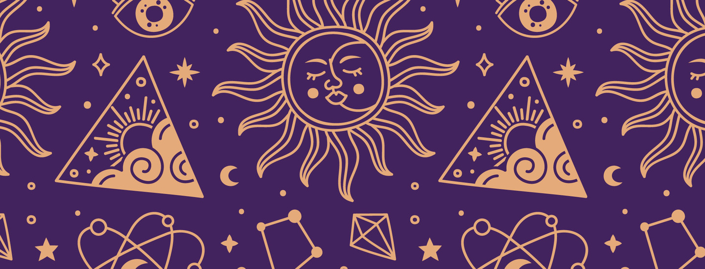

Qué es una Carta Natal?
Una carta natal es un mapa astrológico personalizado que muestra la posición de los planetas en el momento exacto de tu nacimiento. Este "mapa del cielo" revela información sobre tu psicología, talentos, desafíos y potencial. Analizar tu carta natal te permite transitar tus caminos con mayor conciencia y comprensión.
Te ofrezco acompañarte en este camino y descubrir juntos lo que los astros tienen reservado para vos...
¡Animate a entrar en este mundo, pedí tu sesión personalizada!
El servicio de Carta Natal personalizada incluye:
- Un encuentro virtual en vivo acordado con el consultante donde vamos a poder conversar del significado de los signos, planetas y casas de tu carta.
- Un PDF que incluye el gráfico de tu carta y un análisis de la misma para que puedas leer cuando quieras.